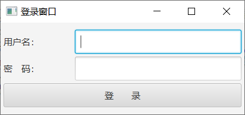
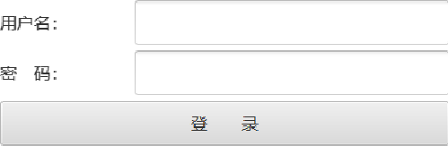
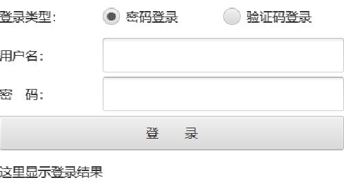
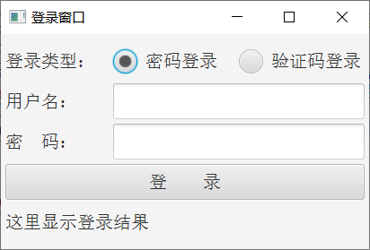

前面介绍了JavaFX的常见控件用法，虽然JavaFX控件比起AWT与Swing要好用些，但是一样通过代码编写控件界面，并没有提高什么开发效率。要想浏览界面的展示效果，都必须运行测试程序才能观看，即使只是微调控件的大小，也得重新运行程序查看效果，显然既费时又费力。为此JavaFX提供了另一种给界面排版的方式，不必使用Java代码堆砌控件，而是利用FXML文件开展界面布局，同时借助于idea的预览功能，无需运行程序即可直接观察FXML的布局效果。所谓“FXML”意思是JavaFX专用的XML格式，它基于XML标准并加以扩展，每个JavaFX控件均有对应的XML标签，把这些蕴含控件的标签组装起来，便形成了一个窗口界面专属的布局文件。
举个简单的例子，现在准备画登录界面，包含用户名输入框、密码输入框，以及登录按钮，这些控件自上往下分成三行排列。该界面预期的展示效果如下图所示。

倘若完全使用代码实现以上的登录界面，无疑要反复地调整代码并多次执行程序，才能达到满意的布局效果。那么采用FXML方式的话，可以把与界面相关的控件元素剥离出来，改为在FXML文件中书写XML标签结构。比如上述登录页对应的FXML文件名叫login.fxml，其内容示例如下：
<?import javafx.scene.layout.FlowPane?>
<?import javafx.scene.layout.HBox?>
<?import javafx.scene.control.Button?>
<?import javafx.scene.control.Label?>
<?import javafx.scene.control.TextField?>
<?import javafx.scene.control.PasswordField?>
<FlowPane xmlns:fx="http://javafx.com/fxml" alignment="center" hgap="5" vgap="5">
<HBox fx:id="hbUser" prefWidth="400" prefHeight="40">
<Label fx:id="labelUser" prefWidth="120" prefHeight="40" text="用户名：" />
<TextField fx:id="fieldUser" prefWidth="280" prefHeight="40" />
</HBox>
<HBox fx:id="hbPassword" prefWidth="400" prefHeight="40">
<Label fx:id="labelPassword" prefWidth="120" prefHeight="40" text="密 码：" />
<PasswordField fx:id="fieldPassword" prefWidth="280" prefHeight="40" />
</HBox>
<Button fx:id="btnLogin" prefWidth="400" prefHeight="40" text="登 录" />
</FlowPane>
在idea中打开login.fxml，注意到该文件界面的左下角有两个选项卡，一个叫“Text”，另一个叫“Scene Builder”。当前打开的login.fxml展示为文本内容，对应的正是“Text”选项，此时单击右边的“Scene Builder”选项，原先的文本内容迅速变为一组可视化页面，页面中央呈现着login.fxml的预览效果，正如下图所示。

原来fxml文件类似于html文件，尽管html文件内部充斥着各种文本标签，但使用浏览器打开html文件总能看到排版精美的网页；而idea自带的Scene Builder承担了fxml浏览器的角色，只要程序员修改了fxml文件的格式内容，切换至“Scene Builder”选项就能立刻看见修改后的界面效果，比起传统的运行程序看效果的方式，Scene Builder的渲染速度要快得多。
回头再看前述的login.fxml，它的文件内容分为两大块，前面一块形如“<?import ***?>”，其作用是导入指定包名路径的控件，与Java代码的import语句相似；后面一块包含各级控件的嵌套结构，其标签格式为“<控件名称 属性列表></控件名称>”，如果当前控件不存在下级控件，则它的标签格式可简化为“<控件名称 属性列表 />”。依据login.fxml的标签内容，可知该界面采取FlowPane流式窗格，且流式窗格拥有下列三类控件：
1、容纳用户名组件的水平箱子HBox，它的编号是hbUser。该箱子内部又有编号为labelUser的用户名标签，以及编号为fieldUser的用户名输入框；
2、容纳密码组件的水平箱子HBox，它的标识为hbPassword。该箱子内部又有编号为labelPassword的密码标签，以及编号为fieldPassword的密码输入框；
3、编号为btnLogin的登录按钮；
引入FXML布局之后，Java代码要改为从指定的fxml文件中加载界面，也就是将场景的创建过程改成如下两行代码：
// 从FXML资源文件中加载程序的初始界面
Parent root = FXMLLoader.load(getClass().getResource("login.fxml"));
Scene scene = new Scene(root, 410, 240); // 创建一个场景
于是绘制界面的JavaFX代码缩小到了下面寥寥几行：
//登录窗口的程序入口（FXML布局控件）
public class LoginMain extends Application {
@Override
public void start(Stage stage) throws Exception { // 应用程序开始运行
stage.setTitle("登录窗口"); // 设置舞台的标题
// 从FXML资源文件中加载程序的初始界面
Parent root = FXMLLoader.load(getClass().getResource("login.fxml"));
Scene scene = new Scene(root, 410, 240); // 创建一个场景
stage.setScene(scene); // 设置舞台的场景
stage.setResizable(true); // 设置舞台的尺寸是否允许变化
stage.show(); // 显示舞台
}
public static void main(String[] args) {
launch(args); // 启动JavaFX应用，接下来会跳到start方法
}
}
接着运行上面的LoginMain程序，弹出的登录界面正如预期所示。
JavaFX的绝大多数静态控件，都能以单个标签的形式添加到fxml之中，除了前面例子提及的流式窗格FlowPane、水平箱子HBox、按钮Button、标签Label、文本输入框TextField、密码输入框PasswordField，还包括网格窗格GridPane、边界窗格BorderPane、垂直箱子VBox、多行输入框TextArea、复选框CheckBox、下拉框ComboBox等。然而单选按钮RadioButton的添加方式别具一格，缘由在于好几个单选按钮要构成一个按钮小组，这样才能让同组的单选按钮联动起来。因此fxml得先声明一个ToggleGroup标签，并给它分配标签编号，然后在RadioButton标签后面添加toggleGroup属性，指定加入前一步的ToggleGroup编号。操作单选按钮的具体fxml片段示例如下：
<HBox fx:id="hbType" prefWidth="400" prefHeight="40">
<Label fx:id="labelType" prefWidth="120" prefHeight="40" text="登录类型：" />
<fx:define>
<ToggleGroup fx:id="tgType" />
</fx:define>
<RadioButton fx:id="rbPassword" prefWidth="140" prefHeight="40" toggleGroup="$tgType"
text="密码登录" selected="true" />
<RadioButton fx:id="rbVerifycode" prefWidth="140" prefHeight="40" toggleGroup="$tgType"
text="验证码登录" />
</HBox>
当然，新来的RadioButton和ToggleGroup也要在fxml头部添加以下的导入语句：
<?import javafx.scene.control.RadioButton?>
<?import javafx.scene.control.ToggleGroup?>
把与单选按钮有关的xml标签补充到login.fxml，再另存为新的fxml文件名叫login_with_flow.fxml，完整的文件内容如下所示：
<?import javafx.scene.layout.FlowPane?>
<?import javafx.scene.layout.HBox?>
<?import javafx.scene.control.Button?>
<?import javafx.scene.control.Label?>
<?import javafx.scene.control.TextField?>
<?import javafx.scene.control.PasswordField?>
<?import javafx.scene.control.RadioButton?>
<?import javafx.scene.control.ToggleGroup?>
<FlowPane xmlns:fx="http://javafx.com/fxml" alignment="center" hgap="5" vgap="5">
<HBox fx:id="hbType" prefWidth="400" prefHeight="40">
<Label fx:id="labelType" prefWidth="120" prefHeight="40" text="登录类型：" />
<fx:define>
<ToggleGroup fx:id="tgType" />
</fx:define>
<RadioButton fx:id="rbPassword" prefWidth="140" prefHeight="40" toggleGroup="$tgType"
text="密码登录" selected="true" />
<RadioButton fx:id="rbVerifycode" prefWidth="140" prefHeight="40" toggleGroup="$tgType"
text="验证码登录" />
</HBox>
<HBox fx:id="hbUser" prefWidth="400" prefHeight="40">
<Label fx:id="labelUser" prefWidth="120" prefHeight="40" text="用户名：" />
<TextField fx:id="fieldUser" prefWidth="280" prefHeight="40" />
</HBox>
<HBox fx:id="hbPassword" prefWidth="400" prefHeight="40">
<Label fx:id="labelPassword" prefWidth="120" prefHeight="40" text="密 码：" />
<PasswordField fx:id="fieldPassword" prefWidth="280" prefHeight="40" />
</HBox>
<Button fx:id="btnLogin" prefWidth="400" prefHeight="40" text="登 录" />
<Label fx:id="labelLoginResult" prefWidth="400" prefHeight="40" text="这里显示登录结果" />
</FlowPane>
然后利用Scene Builder观察login_with_flow.fxml的预览界面，由下图可见单选按钮组合已经添加至登录窗口的上方。

接着修改LoginMain.java，将创建场景时加载的资源文件名改为login_with_flow.fxml，再重新运行测试程序，此时弹出的登录界面如下图所示：

比较Scene Builder的预览界面，以及实际运行的窗口界面，总体而言两者大同小异，基本的布局排列是吻合的。
更多Java技术文章参见《Java开发笔记（序）章节目录》